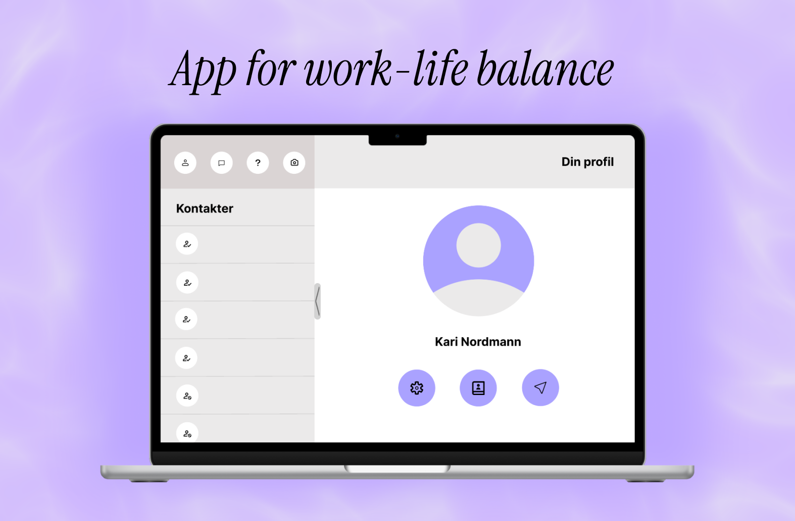
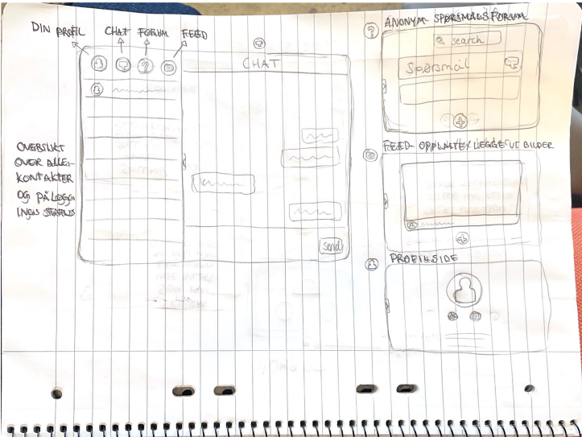

2023
App for hjemmekontor
Hvordan kan et digitalt verktøy styrke sosial tilhørighet for ansatte som jobber hjemmefra?
- Min rolle
- UX-researcher & designer
- Varighet
- Ett semester
- Verktøy
- Figma, intervjuer, analyse
- Kontekst
- UiO · IN1050 - Introduksjon til design, bruk og interaksjon

01 · Problemet
Nærhet over nett
Hjemmekontoret gir fleksibilitet, men kan også gjøre de små sosiale møtene borte.
Prosjektet utforsket hverdagen til personer mellom 50 og 60 år som hovedsakelig jobber hjemmefra. Målet var å forstå hvordan digitale verktøy kunne støtte trivsel og tilhørighet uten å føles som enda et påtvunget møte.
Problemstilling: Hvordan kan vi gjøre kontakt med kolleger over nett enkel, uformell og trygg?
02 · Prosessen
Fra intervjuer til løsning
Jeg startet med å ha brukerintervjuer.
Gjennom dybdeintervjuer kartla jeg arbeidsvaner, arbeidsflyt og trivsel. Materialet ble transkribert, fargekodet og samlet i et affiniydiagram. Dette gjorde mønstrene synlige og ga et tydelig grunnlag for prioritering.
- 01Lavterskel kontakt med kolleger må kunne skje uten å avbryte.
- 02Brukerne savnet de uformelle glimtene fra en delt arbeidshverdag.
- 03Det måtte føles trygt å stille spørsmål uten å virke påtrengende.



03 · Resultatet
Ett sted for å møtes
En testet prototype med fire fokuserte måter å holde kontakt på.
Den høyoppløselige prototypen samler anonym Q&A, chat, en sosial feed og profilsider med kontaktoversikt. Navigasjonen ble holdt enkel, slik at den sosiale funksjonen kunne stå i sentrum.
Neste prosjekt